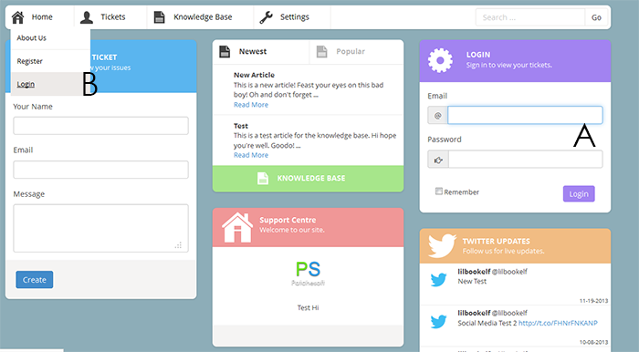

Created: 16/12/2013
By: Patchesoft
Email: patchesoft@gmail.com
Hello! This document is a quick start guide in how to use the Support Centre! For help on installing and modifying the Support Centre, please read the doucmentation file that came with it: here
Welcome to the Quick Start Guide! This guide aims to teach you how to use your Support Centre after it has been setup. For installation help, please use the documentation guide that came with the download. This guide assumes your Support Centre system has been setup and you are ready to start using it.
As an Admin of the Support Centre, the first thing you will want to do is login to the system. You can do this by using the frontpage widget or clicking the login link from the drop down menu in the top navigation bar.
Logging into the system will allow you to access the Admin Panel, the Agent Panel and also edit your own settings. Let's customise our system a bit further by going to the Admin Panel and selecting the Global Options link in the sidebar.
The Global Settings page has a number of options you can use to give your Support Centre a custom feel. First off is the name of your Support Centre. This name is used in the title of your webpage, so you may wish to brand it something like "MySite - Support Centre". After that you have the description which is used in the frontpage widget and helps describe your site to your users. Likewise, you may also upload an image to show off your site's logo.
The Support Email is important as it is used to send out emails to users on who create tickets. It must be a valid email address for email support to work. You also need to make sure your host supports the use of sending emails from your server (some hosts disable this, ask your webhost for more information).
Some of the other options are your Envato API key and Username. These are used to verify purchase codes in Custom Fields. If you do not intend to use this option, you can leave them blank. For more information on this, read the documentation guide!
Finally, the other small options allow you to have more control over how your system works: Enable Guest Tickets (allows a user to create a ticket without an account), Enable File Uploading and Enable Ticket Rating (when a ticket is closed, a user can rate the response).
Next, let's look at how tickets work. A ticket can be created by a registered user (or if you enable it, a guest user). The ticket allows a user to send you a message outlining their problem and issues. Users can create many tickets too so they can always keep using the system whenever they need help. The great thing about the system is that you can also create Knowledge Base articles on commonly asked questions, making it easier for you to provide great support to your customers.
To create a ticket, a user will want to click on the Create Ticket Link. Here you will be presented with a form to fill out, outlining your problem as best as possible. You can also attach files to your ticket should this option be enabled in the admin panel. Once you have filled out the ticket, the user clicks Create and the ticket is then generated in the system.
A user can view their tickets at any time by going to the Ticket main page and clicking on Your Tickets page. Here they can view any responses they get from members of staff or update their ticket if they remember something to add or fix their issue by themselves.
In order for staff members to manage tickets in a quick and efficient way, the Support Centre comes with the Agent Panel. As Admin, you will have access to this area automatically. But you can create other Agents in the Admin Panel. These agents are like regular users only they have access to the Agent Panel and can see the latest tickets.
The Agent Panel displays the tickets that users have created. The frontpage will show the newly created tickets, but you can also view tickets by category, order them by priority and many other options. The Agent Panel also has a search filter which allows you to look for specific tickets.
When you reply to a ticket, that ticket will then be found under the category Your Responded Tickets. Whenever a user responds to a ticket, the ticket is then moved to Your Open Tickets. These are the tickets that you will need to look at and respond to as they are flagged as being waiting for a reply.
This system is designed for multiple agents to use, so feel free to create as many staff accounts as needed.
When a staff member replies to a ticket, the ticket response will have a special green colour around its edges. The newest responses are always listed on the front of the ticket page. You can view older responses too as tickets will "paginate" when a ticket has many replies.
When a ticket has been sufficiently dealt with, you may close the ticket. This will put the ticket under the Closed Tickets categories so that it won't get in the way. You will still be able to read the ticket's contents later, but you won't be able to reply and neither will the ticket creator. It is also possible for the ticket creator to close the ticket if they no longer need help.
As well as user created tickets, you can also allow for guests to create tickets. These tickets work in the same way as user created ones, only to access them the guest needs to enter the ticket "login details". These are given to the guest when they create the ticket and also emailed to them. A guest ticket can only be accessed by using these details (apart from staff, who can read and view any ticket in the Agents Panel).
You can disable this option in the Admin Panel under Global Settings. Sometimes it is better to have a user create an account rather than have them remember lots of details for different tickets.
Aside from tickets is also the Knowledge Base. This is a collection of articles that you can write to help support your users. Frequently asked questions and common problems can be cut down by having a great selection of helpful articles that user's can use. You can also create staff accounts that can help with adding articles.
You can create articles in the Admin Panel. Staff accounts with the Support Agent & Knowledge Editor account level will be able to access the Admin Panel and only the Knowledge Base options. These options allow you to create the articles using a nice editor so you can format your articles in a professional way.
If you need more help, please check out the documentation! You can find information on how to install your application, use custom ticket fields, update the layout and add your own custom CSS! Feel free to contact us also should you need any more help and we'll be happy to explain things to you.
Patchesoft